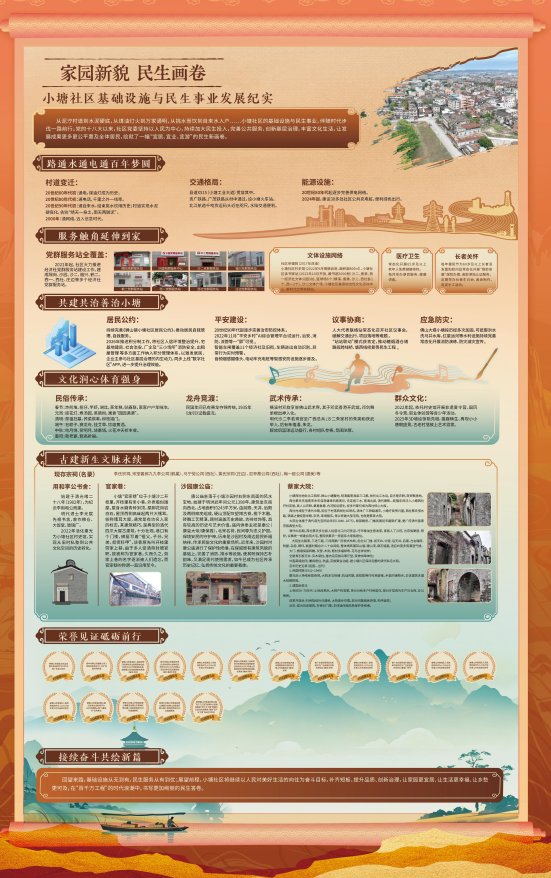

家园新貌 民生画卷



一、开篇总述
小塘社区基础设施与民生事业发展纪实
从泥泞村道到水泥硬底，从煤油灯火到万家通明，从挑水而饮到自来水入户……小塘社区的基础设施与民生事业，伴随时代步伐一路前行。党的十八大以来，社区党委坚持以人民为中心，持续加大民生投入，完善公共服务，创新基层治理，丰富文化生活，让发展成果更多更公平惠及全体居民，绘就了一幅"宜居、宜业、宜游"的民生新画卷。
二、基础设施 · 从无到有
路通水通电通 百年梦圆
村道变迁：
20世纪60年代初：通电，煤油灯成为历史
20世纪80年代初：通电话，千里之外一线牵
20世纪90年代初：通自来水，结束挑水饮用历史；村道实现水泥硬底化，告别"晴天一身土，雨天两脚泥"
2000年：通网络，迈入信息时代
交通格局
县道X515（小塘工业大道）贯穿其中；贵广铁路、广茂铁路从村中通过；北江航道千吨货运码头近在咫尺，水陆交通便利。
能源设施
20世纪80年代起逐步完善供电网络；2024年起，建设30多处社区公共充电桩，便利绿色出行。
三、民生服务 · 提质扩面
服务触角延伸到家
党群服务站全覆盖：2022年起，社区大力推进经济社党群服务站建设工作。建成隔岗、沙园、沙二、福兴、鹤二、西一、西社、庄边等多个经济社党群服务站。
文体设施网络：
社区幸福院（2017年改造）
小塘社区村史馆（2022年9月揭牌启用，面积超800㎡）
小塘社区读书驿站（2022年10月开放，藏书超3000册）
沙二、唐美、西一经济社文体公园3处
篮球场6个（横溪、唐美、沙二、西社各1个，西一2个）
沙二文体广场、小塘社区基层综合性文化活动中心、新时代文明实践站
医疗卫生：常态化开展65岁及以上老年人免费健康体检；每月举办便民服务、健康讲座。
长者关怀：每年重阳节为60岁及以上长者派发重阳慰问品；常态化开展"银龄安康"保险办理、高龄津贴认证服务；定期举办长者生日会、美食制作、各类手工活动。
四、治理创新 · 智慧赋能
共建共治善治小塘
居民公约：持续完善《狮山镇小塘社区居民公约》，推动居民自我管理、自我服务。2026年推进积分制工作，将社区人居环境整治提升、宅基地建房、社会治安、厂企及"三小场所"消防安全、出租屋管理等多方面工作纳入积分管理体系，以激发居民、企业主参与社区基层治理的内生动力，同步上线"数字社区"APP，进一步提升治理效能。
平安建设：20世纪90年代起逐步完善治安防控体系；2022年11月"平安乡村"AI综合管理平台试运行，治安、消防、流管等一"屏"可视；智能车闸覆盖11个经济社及旧街，车辆进出自动识别、异常行为实时预警；音频烟感摄像头、电动车充电桩等智感安防设施逐步普及。
议事协商：人大代表联络站常态化召开社区议事会，破解交通出行、项目落地等难题；"站站联动"模式获肯定，推动糖烟酒仓储路段跨线桥、塘西线修复等民生工程。
应急防灾：佛山大堤小塘段历经多次加固，可抵御洪水；洗马井水库、红星运河等水利设施持续完善；常态化开展消防演练、防灾减灾宣传。
五、文体生活 · 百花齐放
文化润心 体育强身
民俗传承：
春节：炸煎堆、榄仔、竿虾，谢灶，蒸年糕、贴春联，家家户户年味浓
元宵：挂花灯、煮汤圆、蒸肠粉，寓意"圆圆满满"
清明：祭祖扫墓，荞菜供奉，柳枝插门
端午：包粽子、赛龙舟、挂艾草、饮雄黄酒
中秋：吃月饼、赏明月、烧番塔，火花冲天祈丰收
重阳：敬老宴、登高祈福
龙舟竞渡：民国年间已有赛龙夺锦传统，1935年《龙引》记载盛况。
武术传承：横溪村邓旋享誉佛山武术界，其子邓奕香港开武馆，邓剑舞单棍出神入化。明代沙二李若珠官至广西总兵；沙二朱家村的朱英和获武举人，后人有朱植潘、朱龙。解放后篮球运动盛行，各村组队参赛，氛围浓厚。
群众文化：2022年起，依托村史馆开展非遗夏令营、国风冬令营、职业体验营等青少年活动；2025年3D墙绘惊艳亮相，猫趣横生、再现小小唐朝盛景，古老村落披上艺术霓裳。
六、建筑遗存 · 活化新生
古建新生 文脉永续
现存宗祠：李氏宗祠、宋室義郎九九李公祠（鹤巢）、马宁劳公祠（西社）、黄氏宗祠（庄边）、忍亭蔡公祠（西社）、梅一欧公祠（唐美）、用和李公书舍（沙园）、卧云书舍（沙二）等。
用和李公书舍：始建于清光绪二十八年（1902年），为纪念李用和公而建。明代进士李光宸先祖书舍，曾作粮仓、大饭堂、玻璃厂。2022年活化重光为小塘社区村史馆，实现从旧时私塾到公共文化空间的历史转化。
官家巷：
小塘"官家巷"位于小塘沙二开枝里，开枝里有条小巷，外表看似围屋。屋身水磨青砖到顶，屋脚花岗岩白石，屋顶西侧高耸起两只大镬耳，俗称镬耳大屋，通常是有功名人家的标志，其建筑精巧，是典型的清代四爪大屋古建筑，十分壮观。巷口有个门楼，横匾写着"祖父，子孙，兄弟，叔侄科甲"，该巷原先叫开枝里劳家上巷，由于多人受清帝封赠官职，故被称为官家巷，久而久之，劳家上巷的名字逐渐被人们遗忘，而官家巷的称谓一直沿用至今。
沙园康公庙：
康公庙坐落于小塘沙园村右侧东南面的风水宝地，始建于明洪武年间公元1398年。建筑坐东南向西北，占地面积约243平方米，由前殿、天井、后殿及两侧廊庑组成，硬山顶配灰塑博古脊，檐下木雕、砖雕工艺精湛，题材涵盖历史典故、吉祥纹饰等，具有较高的历史与艺术价值。庙内供奉主祀是康公（康皇大帝/康保裔），北宋名将，民间尊为忠义护国，保境安民的守护神。历来是沙园村及周边居民祈福纳祥、传承民俗文化的重要场所。近年来，沙园村对康公庙进行了保护性修缮，在保留原有建筑风貌的基础上，完善了消防、排水等设施，使其既保持古朴韵味，又满足现代使用需求，如今已成为社区传承历史记忆、弘扬传统文化的重要载体。
蔡家大院：
小塘西社地处北江西岸、狮山小塘腹地，明清属南海县三江都，依托北江水运，自古是农耕、商贸聚居地。
西社蔡氏先祖南宋末年自南雄珠玑巷南迁，先定居三水、南海北部，清代康熙—乾隆年间迁入小塘西社开村定居，族人以农耕、桑基鱼塘、内河航运营生，经多代繁衍成为西社核心大族。
西社村成型于清代中期，因位于村落西侧社坛得名。清末广三铁路通车，小塘圩商贸兴盛，西社蔡氏借水路、铁路之便经营米粮、杂货，家境殷实，得以修建大型宅院，也就是蔡家大院。
大院主体建于清代道光至同治年间（1840–1875），局部厢房、门楼民国初年翻新扩建，是广府清代富豪宗族典型大宅。
清代中后期，西社蔡氏多位族人经营北江内河货运、圩市粮油生意发家，家族人丁兴旺，为宗族聚居、祭祀、议事统一修建合院大宅，整院供蔡氏一房直系大家族居住。
大院坐北朝南，三进三路、三间两廊广府梳式布局，包含头门楼、前天井、中堂、后天井、后寝、左右厢房、附屋、杂房、晒坪，鼎盛时期合计二十余间房，整体青砖镬耳山墙、硬山顶，麻石墙基，适应岭南多雨潮湿气候。
- 大门、檐墙保留砖雕、灰塑、木刻，题材多福禄寿、花鸟吉祥纹样；
- 全屋青石板天井、实木梁柱，屋内设宗族议事厅堂、家神供奉神位；
- 外围高墙封闭，兼具居住、防盗、宗族聚会功能，是小塘片区保存完整的清代私宅大院。
百年历史沿革（民国—当代）
1. 民国时期（1912–1949）
蔡氏后人持续经营商贸，大院多次修缮；抗战时期，曾短暂用作村民避难、乡临时储物点，主体建筑未遭大规模损毁。
2. 建国后变迁
上世纪50–70年代：土地改革后，大院产权变更，拆分分给多户村民居住，部分厅堂改为生产队仓库、办公用房；
改革开放后：村民陆续外迁建房，大院逐步空置，部分附属厢房坍塌、构件破损；
近年：成为历史建筑，村民对门楼、主体墙体做简易保护性修缮。
七、荣誉榜
荣誉见证 砥砺前行
1. 2008年4月，评为2007年度广东省卫生村；
2. 2012年1月，评为"十好"和谐文明村居；
3. 2012年4月，评为南海区应急指挥暨三防技能演练优秀奖（集体）；
4. 2012年6月，评为2010-2012年佛山市创先争优先进基层党组织（集体）；
5. 2013年3月，评为人口与计划生育工作先进单位；
6. 2013年4月，评为佛山市南海区防汛抢险技能演练优秀奖（集体）；
7. 2013年11月，评为佛山市宜居村庄（集体）；
8. 2013年12月，评为广东省城市体育先进社区（集体）；
10. 2014年5月，评为人口与计划生育工作先进单位；
11. 2015年3月，评为广东省宜居示范村庄（集体）；
12. 2015年5月，评为人口与计划生育工作先进单位；
13. 2017年8月，评为人口与计划生育工作先进单位；
14. 2024年2月，评为2023年度狮山镇"儿童友好"优秀单位；
15. 2024年1月，获2023年度雄狮奖；
16. 2025年1月，获2024年度雄狮奖；
17. 2026年2月，获推进"百千万工程"爱国卫生运动先进集体、推进"百千万工程"先进村（社区）。
八、未来展望
接续奋斗 共绘新篇
回望来路，基础设施从无到有，民生服务从有到优；展望前程，小塘社区将继续以人民对美好生活的向往为奋斗目标，补齐短板、提升品质、创新治理，让家园更宜居、让生活更幸福、让乡愁更可及，在"百千万工程"的时代浪潮中，书写更加绚丽的民生答卷。